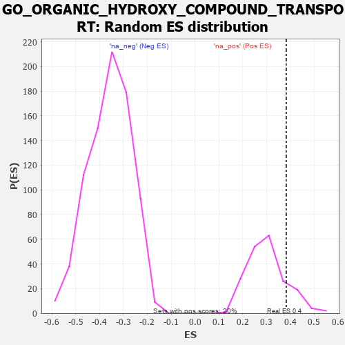

| | | Dataset | 7d |
| Phenotype | NoPhenotypeAvailable |
| Upregulated in class | na_pos |
| GeneSet | GO_ORGANIC_HYDROXY_COMPOUND_TRANSPORT |
| Enrichment Score (ES) | 0.38293493 |
| Normalized Enrichment Score (NES) | 1.2759141 |
| Nominal p-value | 0.1573604 |
| FDR q-value | 0.425149 |
| FWER p-Value | 1.0 |
Table: GSEA Results Summary
 Fig 1: Enrichment plot: GO_ORGANIC_HYDROXY_COMPOUND_TRANSPORT
Fig 1: Enrichment plot: GO_ORGANIC_HYDROXY_COMPOUND_TRANSPORT
Profile of the Running ES Score & Positions of GeneSet Members on the Rank Ordered List
| PROBE | GENE SYMBOL | GENE_TITLE | RANK IN GENE LIST | RANK METRIC SCORE | RUNNING ES | CORE ENRICHMENT | | 1 | SYT2 | | | 8 | 5.577 | 0.2289 | Yes |
| 2 | ABCA5 | | | 29 | 3.799 | 0.3829 | Yes |
| 3 | LRP1 | | | 470 | 0.648 | 0.3542 | No |
| 4 | P2RY1 | | | 1416 | 0.407 | 0.2519 | No |
| 5 | RXRA | | | 1647 | 0.365 | 0.2379 | No |
| 6 | SYK | | | 2186 | 0.278 | 0.1816 | No |
| 7 | VPS4A | | | 2654 | 0.205 | 0.1312 | No |
| 8 | AQP3 | | | 2796 | 0.184 | 0.1210 | No |
| 9 | ARV1 | | | 2827 | 0.179 | 0.1246 | No |
| 10 | EEPD1 | | | 2835 | 0.178 | 0.1310 | No |
| 11 | SYT8 | | | 3115 | 0.135 | 0.1014 | No |
| 12 | SYT11 | | | 3732 | 0.036 | 0.0253 | No |
| 13 | HTR1B | | | 3745 | 0.035 | 0.0252 | No |
| 14 | TOR1A | | | 4030 | -0.013 | -0.0101 | No |
| 15 | SYT12 | | | 4172 | -0.037 | -0.0263 | No |
| 16 | SYT17 | | | 4310 | -0.061 | -0.0411 | No |
| 17 | NPC2 | | | 4498 | -0.093 | -0.0608 | No |
| 18 | NISCH | | | 4568 | -0.109 | -0.0650 | No |
| 19 | SYT4 | | | 4590 | -0.116 | -0.0628 | No |
| 20 | CLU | | | 4889 | -0.174 | -0.0932 | No |
| 21 | OSBP2 | | | 4978 | -0.193 | -0.0963 | No |
| 22 | DRD2 | | | 5088 | -0.221 | -0.1009 | No |
| 23 | TMF1 | | | 5225 | -0.251 | -0.1077 | No |
| 24 | NPY2R | | | 5331 | -0.281 | -0.1094 | No |
| 25 | SOAT1 | | | 5657 | -0.363 | -0.1354 | No |
| 26 | ABCG1 | | | 5778 | -0.399 | -0.1341 | No |
| 27 | PGAP1 | | | 5958 | -0.457 | -0.1378 | No |
| 28 | SYT9 | | | 5992 | -0.469 | -0.1226 | No |
| 29 | NPC1 | | | 6364 | -0.602 | -0.1446 | No |
| 30 | ABCA2 | | | 6433 | -0.634 | -0.1270 | No |
| 31 | LIPG | | | 6468 | -0.648 | -0.1046 | No |
| 32 | SYT15 | | | 6472 | -0.650 | -0.0782 | No |
| 33 | GHSR | | | 6937 | -0.894 | -0.0998 | No |
| 34 | CFTR | | | 7143 | -1.030 | -0.0832 | No |
| 35 | SYT1 | | | 7148 | -1.033 | -0.0411 | No |
| 36 | TSPO | | | 7194 | -1.065 | -0.0029 | No |
| 37 | ABCA1 | | | 7243 | -1.113 | 0.0369 | No |
| 38 | KCNB1 | | | 7444 | -1.327 | 0.0664 | No |
Table: GSEA details [plain text format]

Fig 2: GO_ORGANIC_HYDROXY_COMPOUND_TRANSPORT: Random ES distribution
Gene set null distribution of ES for GO_ORGANIC_HYDROXY_COMPOUND_TRANSPORT